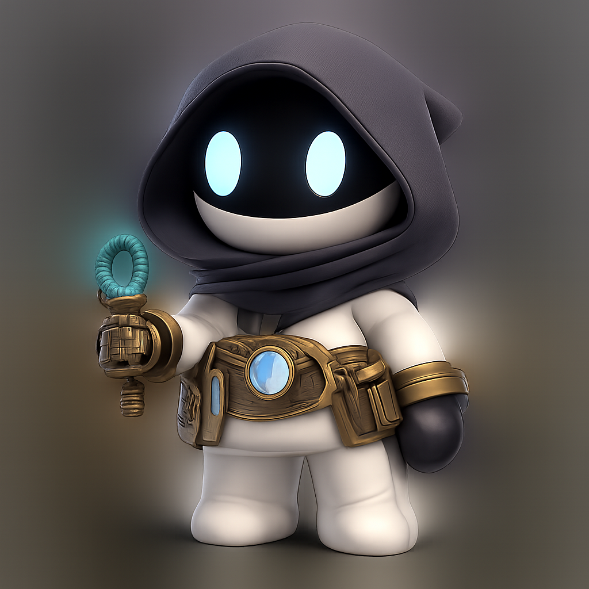

Zero Point City original website mascot, full-body small humanoid gateway operator, matte off-white vinyl body, ink-black hood, warm brass utility belt, muted teal glowing key, refined 3D clay render, transparent background PNG, isolated character only, no text, no letters, no logo, no card frame, no border, no scene.